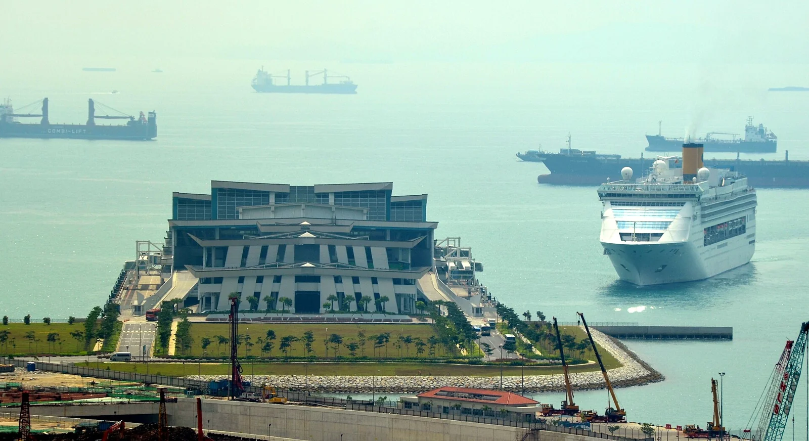
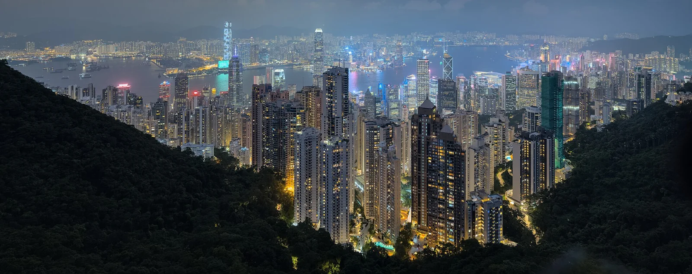
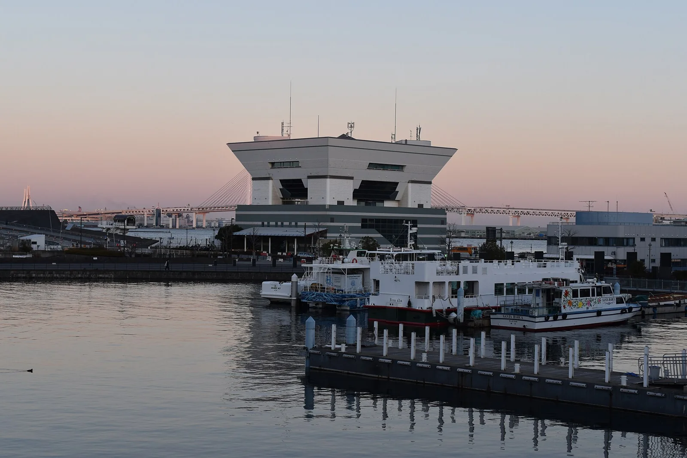
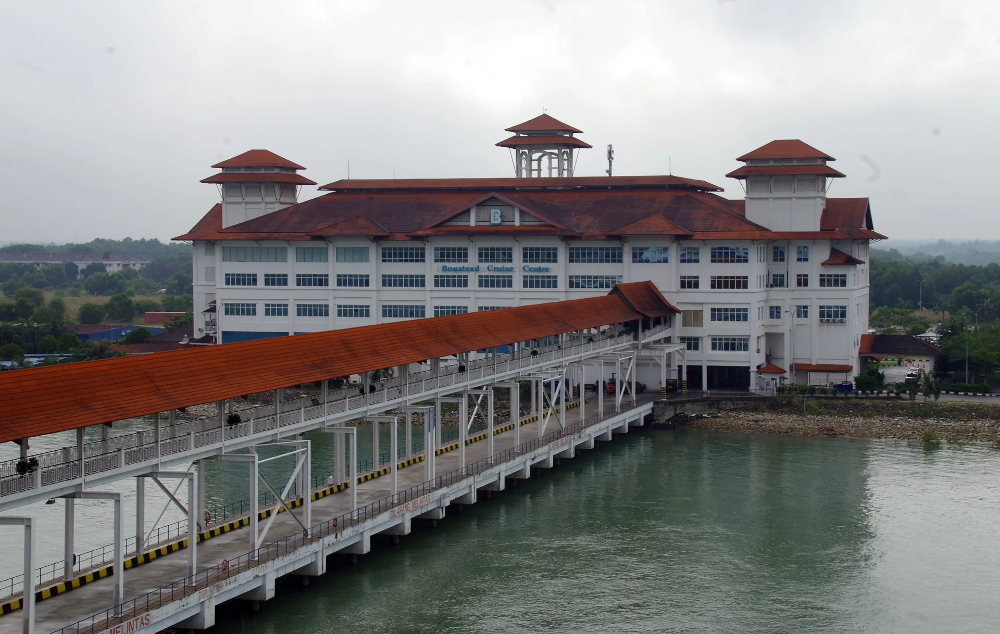
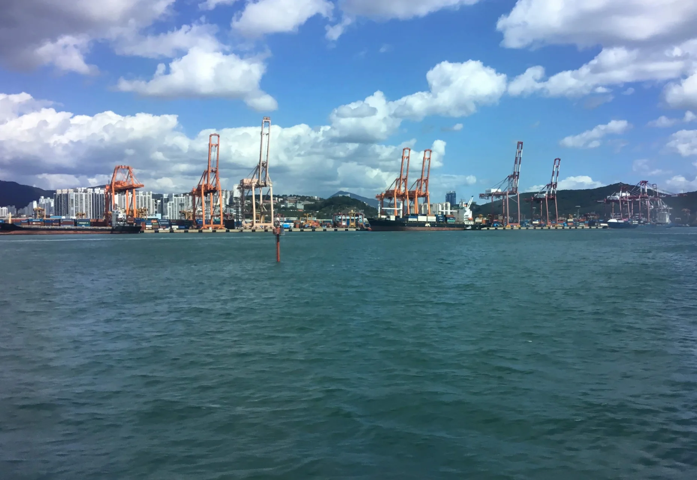
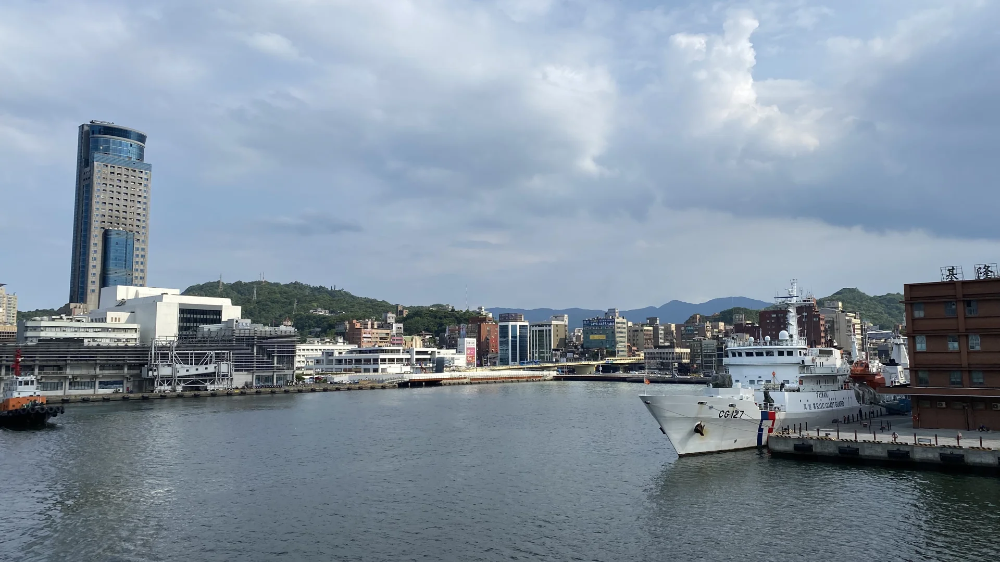
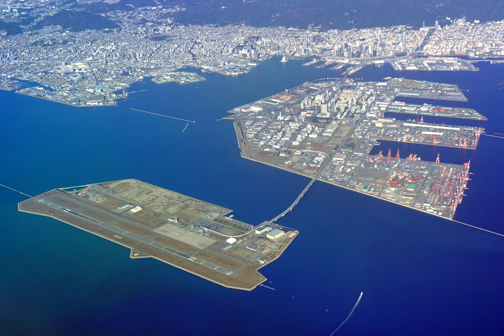
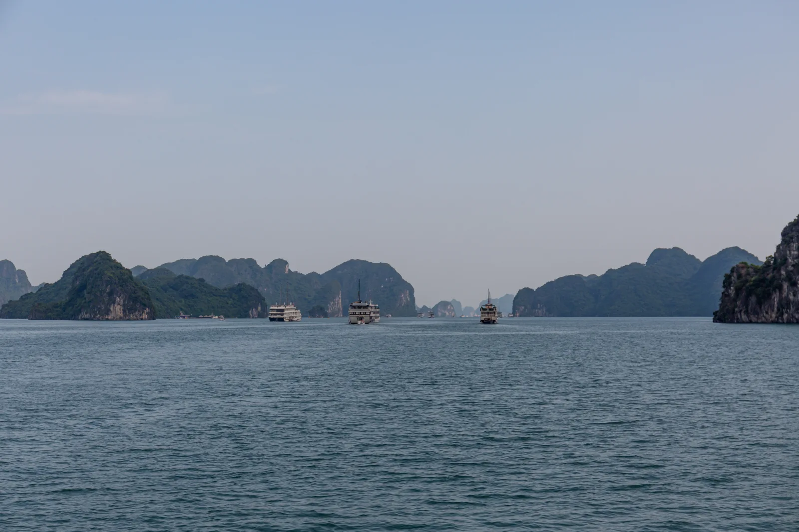
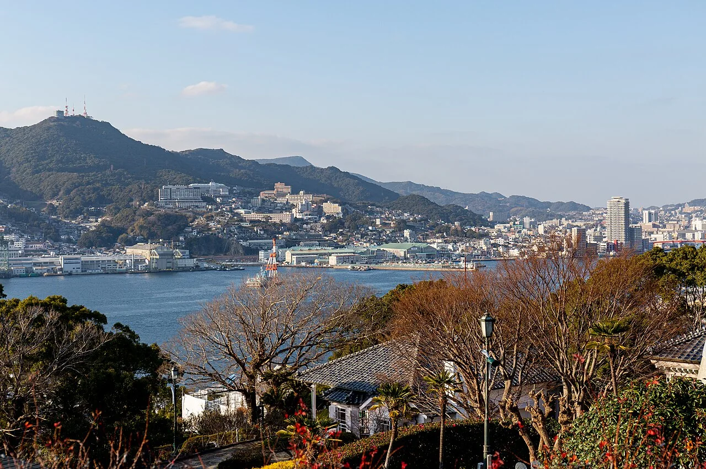
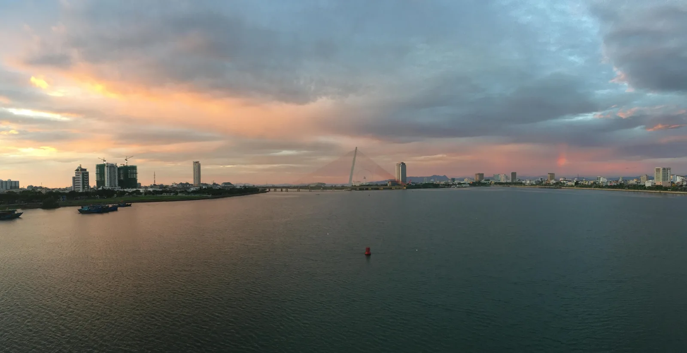

Nguồn ảnh cảng châu Á
Tác giả, ảnh gốc và giấy phép của những hình ảnh được sử dụng trên OceVie.
Danh sách hình ảnh
10 hình ảnh-

Xem ảnh gốc -

Xem ảnh gốcVictoria Harbour
Hồng Kông
- Tác giả
- Dllu
- Giấy phép
- CC BY-SA 4.0
Panorama of Hong Kong Harbour from The Peak
-

Xem ảnh gốc -

Xem ảnh gốcPort Klang Cruise Terminal
Port Klang · Malaysia
- Tác giả
- Balou46
- Giấy phép
- CC BY-SA 4.0
Port Klang Cruise Terminal — Port Klang
-

Xem ảnh gốc -

Xem ảnh gốc -

Xem ảnh gốc -

Xem ảnh gốc -

Xem ảnh gốc -

Xem ảnh gốcSông Hàn
Đà Nẵng · Việt Nam
- Tác giả
- Christophe95
- Giấy phép
- CC BY-SA 4.0
Sông Hàn — Đà Nẵng lúc bình minh


Về việc sử dụng hình ảnh
Ảnh được chuyển sang WebP, giảm kích thước và cắt khung khi hiển thị. Các ảnh đã tối ưu được cung cấp theo giấy phép gốc tương ứng.
Hình ảnh dùng làm cảm hứng điểm đến, không xác nhận cảng ghé hay tàu của bất kỳ chuyến đang bán nào.